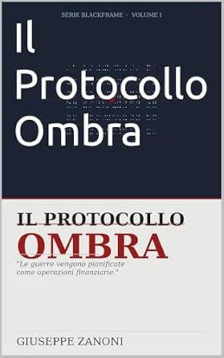
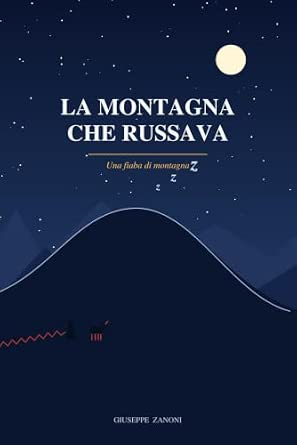
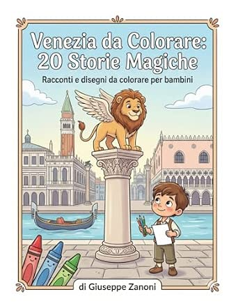

Il protocollo ombra
Un algoritmo finanziario scompare dai radar e lascia dietro di sé una scia di domande. Chi lo ha costruito, e per quale scopo?
Acquista su AmazonScrittore · noto anche come «Lo Zio Beppe»
Dalle lagune di Venezia ai thriller geopolitici.
Biografia
IT Manager, Giuseppe Zanoni costruisce mondi.
Ha sviluppato due voci letterarie distinte: da un lato libri per bambini ambientati nella laguna di Venezia, con animali parlanti e colori vividi; dall'altro thriller geopolitici della serie BLACKFRAME, dove algoritmi, mercati finanziari e strutture di potere invisibili si intrecciano.
Il filo conduttore è Venezia, presente in tutta la sua opera come un canale silenzioso.
Scrive per i curiosi: bambini che vogliono capire il mondo e adulti che sospettano che il mondo sia più complicato di quanto sembri.
Bibliografia
Racconti per adulti

Un algoritmo finanziario scompare dai radar e lascia dietro di sé una scia di domande. Chi lo ha costruito, e per quale scopo?
Acquista su AmazonLe fondamenta di un sistema di potere invisibile iniziano a incrinarsi, una verità alla volta.
Acquista su AmazonTra campi, ponti e caffè affacciati sul Canal Grande, un incontro inatteso cambia il ritmo di una giornata d'estate.
Acquista su AmazonUn incidente domestico, una spiegazione fin troppo logica e una catena di malintesi. Quando ci sono di mezzo i gatti, nulla è davvero colpa di chi si pensa.
Acquista su AmazonMirano, 1761: un'oca impertinente e un secchio di calce fanno incontrare due vite che non dovevano incontrarsi. Una commedia veneta tra feste, nebbia e un segreto. Scritto con Raoul Lazzari.
Acquista su AmazonFiabe per bambini
Leo è un piccolo granchio curioso che, una mattina, scopre un segreto nascosto tra le acque della laguna.
Acquista su Amazon
Vincitore, secondo posto al concorso nazionale «Il racconto nel cassetto», AssoAli, XXIII edizione 2026
Cento anni fa la montagna russò. A Roccasorda la piccola Brina, undici anni e orecchie finissime, è l'unica a sentire che il monte Dormiglione ha ricominciato a russare: quando russa, la neve viene giù.
Acquista su Amazon
Venti storie magiche ambientate a Venezia, con pagine da colorare: un leone alato guardiano dei sogni, una gondola che vorrebbe volare.
Acquista su AmazonStorie per accompagnare i bambini nella scoperta di sé e del mondo, tra borghi incantati e paesaggi del Giappone, con Lila, Laura, Finn e Han.
Acquista su AmazonProfessione
IT Manager e consulente di progetti tecnologici.
Porto nel lavoro lo stesso metodo che uso per scrivere: struttura, precisione e attenzione ai dettagli.
Social
Contatti
Per domande, collaborazioni o incontri con i lettori, lascia un messaggio.